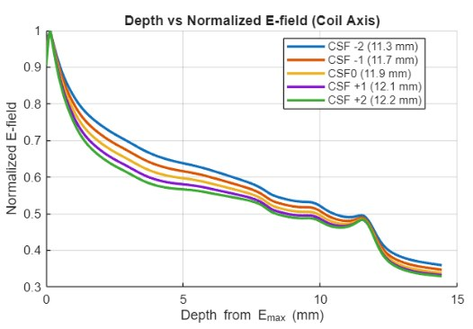
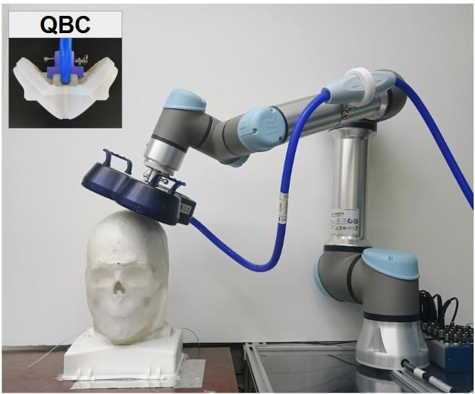

Simulation connects design to evidence.
Field modeling guided what to fabricate, which material properties needed control, and how experimental results should be interpreted. These studies draw from the dissertation’s TMS modeling and coil-evaluation work.
Main interactive showcase
Inspect the field studies.
Switch among the studies to see how conductivity, coil geometry, and field localization shaped design and testing decisions.
FIGURES FROM VCU DISSERTATION · IMAGE PREVIEW
Choose a related area
Follow the modeling workflow.
The simulation work connects naturally to the measured data, CAD inputs, and physical TMS instrument.

01 / RESULTS
Measurement & modeling data
Quantitative E-field and material results collected in one place.
Explore section
02 / MODEL INPUTS
Anatomical CAD
Explore the physical geometry underlying the simulated model.
Explore section
03 / APPLICATION
TMS device integration
See how model predictions connect to physical measurement hardware.
Explore section